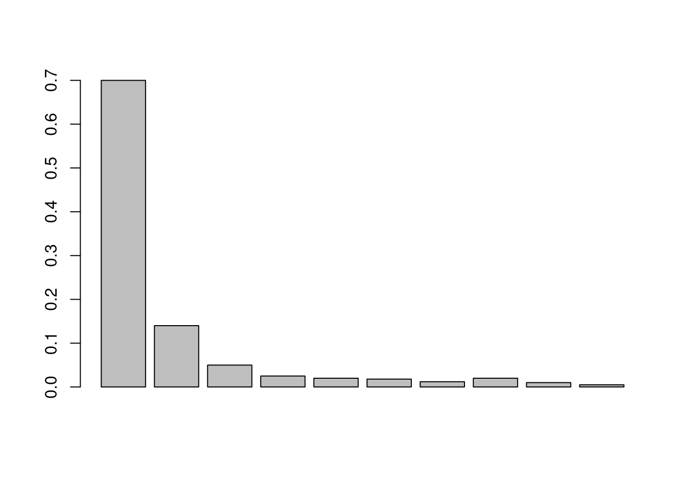
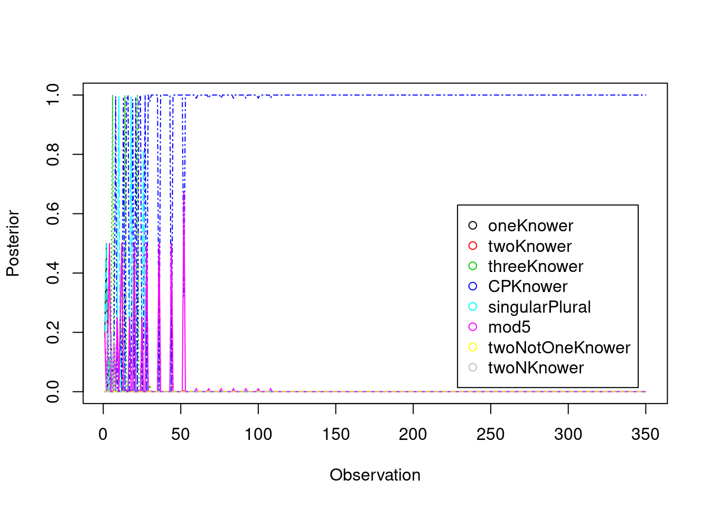

6 Learning in a Language of Thought
Reading: Piantadosi, Steven T., Joshua B. Tenenbaum, and Noah D. Goodman. “Bootstrapping in a Language of Thought: A Formal Model of Numerical Concept Learning.” Cognition 123, no. 2 (May 2012): 199–217.
6.1 The LogSumExp function
Import the matrixStats library that we will use for its rowLogSumExp function.
Logsumexp is an operation on a vector that allows us to sum probabilities in log-space. Effectively, it calculates the following in an intelligent way (you don’t need to worry about what happens under the hood):
\[ \log \left( \sum_i \exp(x_i) \right) \]
In our case, we will have a vector of log-probabilities, and we will need to normalize it. To find the normalization factor, we will need the sum of the probabilities, which we will then log again and subtract from each element of the vector to normalize (recall that in log-space subtraction corresponds to division in non-log-space). We can do this sum with the LogSumExp function.
6.2 The conceptual primitives and number systems
words <- c('one',
'two',
'three',
'four',
'five',
'six',
'seven',
'eight',
'nine',
'ten')
setA <- c('a', 'b', 'c', 'd', 'e')
setB <- c('a', 'b', 'c')In the paper, a bunch of conceptual primitives are considered, which can be combined to create an LoT. Here is how they can be written in R:
singleton <- function(X) length(X)==1
doubleton <- function(X) length(X)==2
tripleton <- function(X) length(X)==3
set.difference <- function(X,Y) setdiff(X,Y)
union.f <- function(X,Y) union(X,Y)
intersection.f <- function(X,Y) intersect(X,Y)
select.f <- function(X) X[1]
and.f <- function(P,Q) P & Q
or.f <- function(P,Q) P || Q
not.f <- function(P) ! Q
if.f <- function(P,X,Y) ifelse(P,X,Y)
next.f <- function(W) words[match(W, words)+1]
prev.f <- function(W) words[match(W, words)-1]
equal.word <- function(W,V) W==VWe are not going to generate LoTs or sample from the grammar like they do in the paper. Rather, we are just going to use the few LoTs that are individually discussed in the paper (Figure 1). Each LoT is a function from sets to number words. Here is how they can be coded from the conceptual primitives above:
- oneKnower
- twoKnower
- threeKnower
threeKnower <- function(S){
return(if.f(
singleton(S),
'one',
if.f(
doubleton(S),
'two',
if.f(
tripleton(S),
'three',
'na'
)
)
))
}- CPKnower
CPKnower <- function(S){
return(if.f(
singleton(S),
'one',
next.f(
CPKnower(
set.difference(
S,
select.f(S)
)
)
)
))
}- singularPlural
- mod5
mod5 <- function(S){
return(
if.f(
or.f(
singleton(S),
equal.word(
mod5(
set.difference(
S,
select.f(S)
)
),
'four'
)
),
'one',
next.f(
mod5(
set.difference(
S,
select.f(S)
)
)
)
)
)
}
# This one is kind of complicated, so just to convince you that it works as expected:
unlist(lapply(1:10,function(n){mod5(c(1:n))}))## [1] "one" "two" "three" "four" "one" "two" "three" "four" "one"
## [10] "two"- twoNotOneKnower
- twoNKnower
twoNKnower <- function(S){
if (length(S)<=5){
return(if.f(
singleton(S),
'one',
next.f(next.f(
twoNKnower(
set.difference(
S,
select.f(S)
)
)
))
))
} else{
return(words[length(words)])
}
}LoTs <-
c(oneKnower,
twoKnower,
threeKnower,
CPKnower,
singularPlural,
mod5,
twoNotOneKnower,
twoNKnower
)
names(LoTs) <-
c('oneKnower',
'twoKnower',
'threeKnower',
'CPKnower',
'singularPlural',
'mod5',
'twoNotOneKnower',
'twoNKnower'
)For example, let’s see what word oneKnower produces for the sets defined above:
## [1] "na"## [1] "na"6.3 Learning an LoT
What we are really interested in is the likelihood function, i.e. the function from a set (really, a set size) to the probability of producing each number word, in each LoT. The authors add two complications. First, when ‘NA’ is produced, a word is chosen uniformly from the number words. Second, with a small probability the speaker chooses a number word at random. Let’s write a function that for a given LoT gives the probability of each number word given a set size.
word.to.p <-
function(proposed.word,
literal.word,
alpha = 0.95) {
# equation 5 in the paper
if (literal.word == 'na') {
return(1 / length(words))
} else if (literal.word == proposed.word) {
alpha + (1 - alpha) * (1 / length(words))
} else {
(1 - alpha) * (1 / length(words))
}
}
likelihood.f <-
function(LoT,
set.to.evaluate,
alpha = 0.7) {
word <- LoT(set.to.evaluate)
list.p <- unlist(lapply(
words,
word.to.p,
literal.word = word,
alpha = alpha
))
names(list.p) <- words
return(list.p)
}Let’s test the likelihood function by producing the probability of each number word produced by each LoT given setA:
## $oneKnower
## one two three four five six seven eight nine ten
## 0.1 0.1 0.1 0.1 0.1 0.1 0.1 0.1 0.1 0.1
##
## $twoKnower
## one two three four five six seven eight nine ten
## 0.1 0.1 0.1 0.1 0.1 0.1 0.1 0.1 0.1 0.1
##
## $threeKnower
## one two three four five six seven eight nine ten
## 0.1 0.1 0.1 0.1 0.1 0.1 0.1 0.1 0.1 0.1
##
## $CPKnower
## one two three four five six seven eight nine ten
## 0.01 0.01 0.01 0.01 0.91 0.01 0.01 0.01 0.01 0.01
##
## $singularPlural
## one two three four five six seven eight nine ten
## 0.01 0.91 0.01 0.01 0.01 0.01 0.01 0.01 0.01 0.01
##
## $mod5
## one two three four five six seven eight nine ten
## 0.91 0.01 0.01 0.01 0.01 0.01 0.01 0.01 0.01 0.01
##
## $twoNotOneKnower
## one two three four five six seven eight nine ten
## 0.1 0.1 0.1 0.1 0.1 0.1 0.1 0.1 0.1 0.1
##
## $twoNKnower
## one two three four five six seven eight nine ten
## 0.01 0.01 0.01 0.01 0.01 0.01 0.01 0.01 0.91 0.01Function likelihood.f gives us the probability of each number word, given an LoT and a set. Formally, \(P(w | t, c, L)\) for each possible value of \(w\), given specific values of \(t,c,L\).
The prior is calculated in a rather complex way as a function of the length of the expression encoding the hypothesis (the number system) and whether it contains recursion (i.e. whether the function calls itself). We could try and write the code to do this based on derivation lengths, but it would be pretty complicated. Let’s just eyeball it:
alpha <- 3
# I am adding 2 for L, the recursion
n.operators.used <- c(2, 4, 6, 6+2, 2, 9+2*2, 2, 6+2)
names(n.operators.used) <- names(LoTs)
unnorm.softmax <- exp(alpha*-n.operators.used)
priors <- c(unnorm.softmax) / sum(unnorm.softmax)
priors## oneKnower twoKnower threeKnower CPKnower singularPlural
## 3.330575e-01 8.255669e-04 2.046376e-06 5.072458e-09 3.330575e-01
## mod5 twoNotOneKnower twoNKnower
## 1.551677e-15 3.330575e-01 5.072458e-09What we want is \(P(L | W, T, C)\). We can apply Bayes rule:
\[\begin{align} P(L | W, T, C) &= \frac{P(W | L, T, C) P(L | T,C)}{P(W | T, C)} \\ &= \frac{P(W | L, T, C) P(L)}{P(W | T, C)} \\ &= P(L)\frac{\prod_i P(w_i | L, t_i, c_i)}{\sum_i P(W |l_i, T, C) P(l_i)} \\ &= P(L)\frac{\prod_i P(w_i | L, t_i, c_i)}{\sum_i \left( \prod_j P(w_j |l_i, t_j, c_j) P(l_i) \right)} \\ \end{align}\]
So all the indices vary over dimensions that we can calculate explicitly: either the observations, or the LoTs. In particular, in the original papers they can’t simply loop over the LoTs, since they consider the infinite space of all LoTs, and that forces them to do something fancier called MCMC. However, we only consider the handful of LoTs defined above.
n.elements.to.set takes a number and returns a set with the given number of elements. The elements of the set are shuffled letters.
n.elements.to.set <- function(n.elements){
return(sample(c('a','b','c','d','e','f','g','h','i','j'))[1:n.elements])
}probs gives the probability of each numeral (eyeballing Figure 2 from the paper).
probs <- c(0.7, 0.14, 0.05, 0.025, 0.02, 0.018, 0.012, 0.02, 0.01, 0.005)
# print(1-sum(probs))
barplot(probs)
Specify the number of observations to show the learner, create vector of set sizes.
Create a vector of sets with the specified sizes.
Create vector of true words using the CPKnower:
NOTE: in the paper, they assume these words are produced noisily, while here we just produce them without noise.
For each LoT and each set, get proposed word for that set in that LoT:
proposed.words <- data.frame(row.names = c(1:n.observations))
for (lot.name in names(LoTs)){
new.words <- unlist(lapply(observed.sets, LoTs[[lot.name]]))
proposed.words[[lot.name]] <- new.words
}For each LoT, calculate the likelihood of each word given each set:
loglikelihoods <- data.frame(row.names=c(1:n.observations))
for (i in colnames(proposed.words)){
# print(proposed.words[i])
p.lot <-
mapply(word.to.p,
c(proposed.words[[i]]),
true.words)
loglikelihoods[i] <- log(p.lot)
}
tail(loglikelihoods)## oneKnower twoKnower threeKnower CPKnower singularPlural mod5
## 345 -0.04604394 -0.04604394 -0.04604394 -0.04604394 -0.04604394 -0.04604394
## 346 -0.04604394 -0.04604394 -0.04604394 -0.04604394 -0.04604394 -0.04604394
## 347 -0.04604394 -0.04604394 -0.04604394 -0.04604394 -0.04604394 -0.04604394
## 348 -0.04604394 -0.04604394 -0.04604394 -0.04604394 -0.04604394 -0.04604394
## 349 -0.04604394 -0.04604394 -0.04604394 -0.04604394 -0.04604394 -0.04604394
## 350 -5.29831737 -0.04604394 -0.04604394 -0.04604394 -0.04604394 -0.04604394
## twoNotOneKnower twoNKnower
## 345 -5.29831737 -0.04604394
## 346 -5.29831737 -0.04604394
## 347 -5.29831737 -0.04604394
## 348 -5.29831737 -0.04604394
## 349 -5.29831737 -0.04604394
## 350 -0.04604394 -5.29831737NOTE: the CPKnower always gets the highest possible likelihood for all true number words, because it’s the true speaker!
The cumulative product of the likelihood (or in this case the cumulative sum of the loglikelihood) tells us what the likelihood was at each successive observation for each LoT.
cumulative.loglikelihood <- as.matrix(sapply(loglikelihoods, cumsum))
unnormalized.cumulative.logposterior <-
cumulative.loglikelihood +
log(priors)Lognormalize the result:
posterior <- exp(
unnormalized.cumulative.logposterior -
matrixStats::rowLogSumExps(unnormalized.cumulative.logposterior)
)
head(posterior)## oneKnower twoKnower threeKnower CPKnower singularPlural
## [1,] 1.997903e-01 1.997903e-01 1.997903e-01 1.227554e-06 1.997903e-01
## [2,] 4.999939e-01 3.072068e-06 9.397529e-13 3.072068e-06 4.999939e-01
## [3,] 1.228839e-06 1.999995e-01 1.999995e-01 1.999995e-01 1.228839e-06
## [4,] 3.072078e-06 4.999954e-01 3.072078e-06 9.397557e-13 3.072078e-06
## [5,] 1.999995e-01 1.228839e-06 1.999995e-01 1.999995e-01 1.999995e-01
## [6,] 1.879483e-12 6.144061e-06 9.999754e-01 6.144061e-06 1.879483e-12
## mod5 twoNotOneKnower twoNKnower
## [1,] 1.997903e-01 1.046023e-03 1.227554e-06
## [2,] 3.072068e-06 2.576006e-17 3.072068e-06
## [3,] 1.999995e-01 2.870310e-08 1.999995e-01
## [4,] 4.999954e-01 2.308335e-15 9.397557e-13
## [5,] 1.228839e-06 7.867959e-13 1.999995e-01
## [6,] 6.144061e-06 2.059630e-14 6.144061e-06Finally, let’s plot the posterior distribution. You can see that the general pattern from the paper holds: initially, various other hypotheses dominate, but eventually over enough observations the CPKnower wins out. Note that this plot is similar but not identical to Figure 3(a) in the paper. The difference is that they consider all possible LoTs, and therefore more than one LoT encodes each type of agent - e.g. more than one LoT is a oneKnower etc. On the other hand, we specified a small list of LoTs.
posterior <- as.data.frame(posterior)
matplot(
rownames(posterior),
posterior,
type = 'l',
xlab = 'Observation',
ylab = 'Posterior',
col = 1:ncol(posterior)
)
legend(
'bottomright',
inset = .05,
legend = colnames(posterior),
pch = 1,
col = 1:ncol(posterior)
)
6.4 If there is time left…
- Put the above code into a function that runs the simulation repeatedly, and check what happens when you average multiple runs of the simulation.
- Come up with a different LoT and add it to the list above, and run the simulation. How does it compare to the other LoTs?
- Add noise to the generation of the observed number words. How does it change the results?
6.5 Exercises
Exercise 6.1 Change the probabilities of seeing the numerals (in probs) so that the agent only ever sees ‘one’ and ‘two’, with equal probability. Train the agent again, plot the result, and describe what happens to the learning.
Exercise 6.2 Use the conceptual primitives defined in the notebook to define an LoT